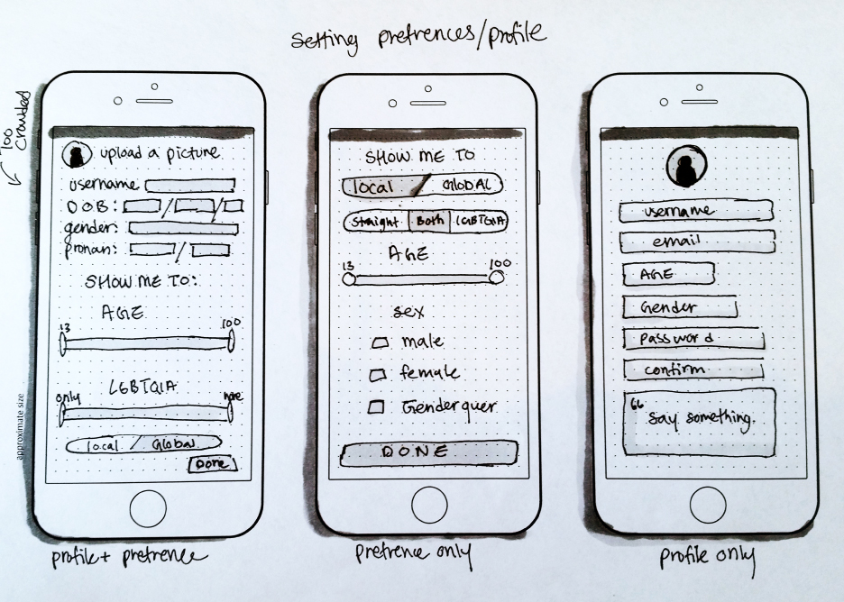
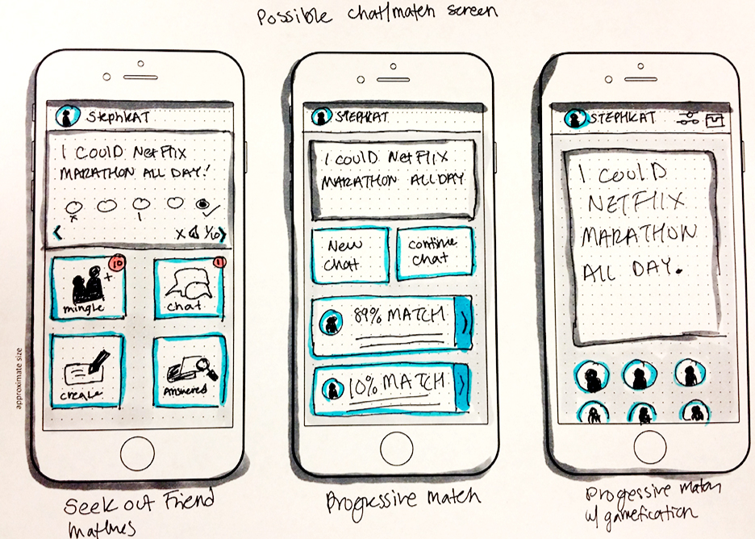
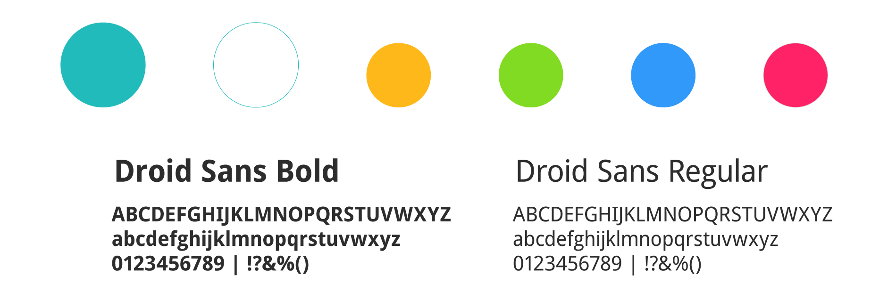
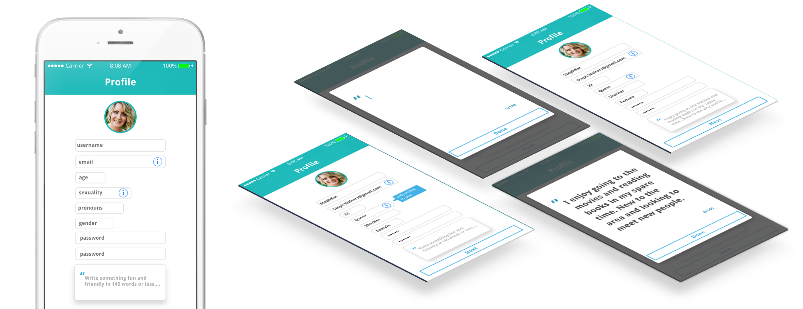
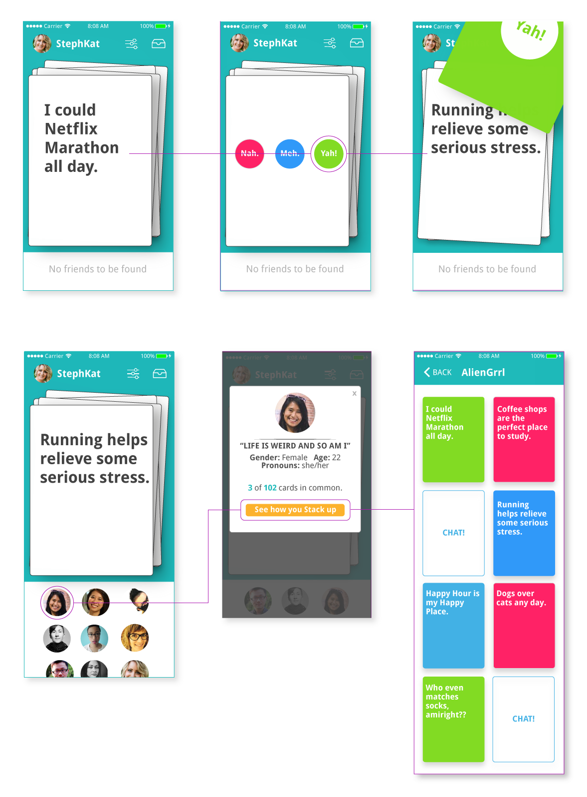

Overview
StackUp is a new friend finder app that connects people through a multi-choice card game.
Problem Other friend finder apps have romantic elements ingrained in them. Competing friend finders also often
rely on user pictures, are ridden with blank or uninteresting profiles, and do little to connect users by interest.
Solution
Give users control of their prefrences and gameify finding like-minded people. Forgo elaborate profiles
and profile pictures and pages for simple answers and questions.
Evaluating the Competition
There are a lot of friend/dating apps on the market. Most seem to be picture heavy and none seem to cater
to those just looking for friends. Often unsolicited messages and empty profiles make many of these apps
seem a bit sketchy. Transphobia and a lack of queer visibility is a problem that many do not address.


Getting Started
We all start somewhere. From rough sketches to wireframes, creating StackUP was a journey that called
for iteration after iteration of ui for the perfect ux.

Typography & Color
The colors for StackUP are meant to friendly and gender neutral. Bright colors make users think of play
and games and the main blueish hue echoes other popular social apps. Type is open and easy to read.
First Impressions
StackUps login screen gives users a hint at what's to come.

Profile Creation
Gender, pronouns, and sexuality play an important part in user interaction with others.

It's all in the cards
The cards are what make StackUP unique. Answer each card by swiping and clicking the answer.
Your answer slides off into your deck and is used to help find people with similar decks.
As you answer cards people who have similar cards to yours are pulled up.
Click their picture to see how you stack up and view all similar answered cards in their deck.
Like what you see? Send a chat!